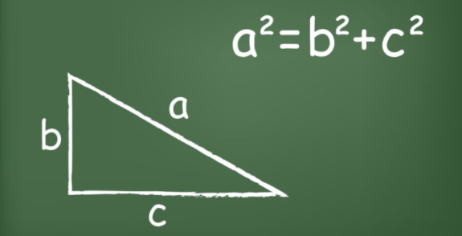

Matematicas

Pitágoras y las Matemáticas
En el mundo moderno, Pitágoras se conoce por sus aportes a las matemáticas y a la ciencia, por su famoso Teorema. También es conocido como cosmólogo, debido a su visión de un universo en el que los cuerpos celestes producen “La música de las esferas” por sus movimientos.
Aunque Pitágoras descubrió la famosa relación que hay en los triángulos rectángulos entre sus lados, el teorema de Pitágoras, se dice que este lo aprendió de los egipcios. Sus estudios de las matemáticas eran importantes porque los números representaban la perfección, ya que según él, todo en el universo era números. Los pitagóricos trabajaron con los números naturales. Se dice que cuando se encontraron con el lado de un triángulo rectángulo con dos lados de largo 1, ocultaron el resultado, porque la raíz cuadrada de 2, √2, no se podía representar por ningún número natural ni por ninguna fracción. Lo llamaron un número Irracional. Lo mismo ocurrió con la relación entre el largo de la circunferencia de un círculo y su radio: “π”.
Además, estudiaron la geometría y los sólidos geométricos tridimensionales, los poliedros. Estudiaron el famoso Número Áureo, Phi “ф”, que se establece entre las relaciones de una línea recta dividida en dos partes desiguales, cuando la proporción de la recta y su parte mayor es igual a la proporción entre la parte mayor y la menor. En el siguiente video veran una demostración del Teorema de Pitágoras
- Actividad No. 5 Preguntas para Lectura Activa
-
- ¿Qué relación de los triángulos descubrió?
- ¿Porque los pitagóricos ocultaron los números √2 y π?
- ¿Qué sólidos estudiaron en geometría?
- ¿Qué es el Numero Áureo Phi “ф”?